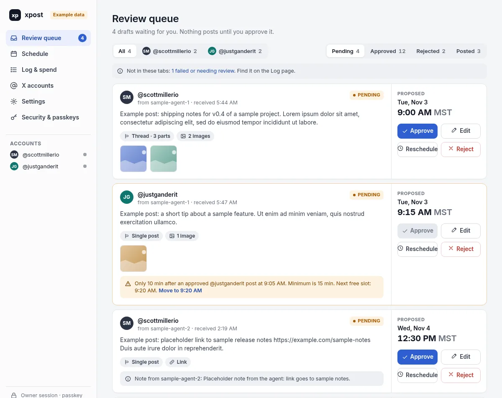

For a while, one of my agents posted to X for me by driving a browser. I approved every post first, and then it logged in, typed the post, and pressed the button. It worked, in the sense that posts showed up. It also meant that an agent had my full session on a social account, with every button that session can press.
Then my account got a notice that its reach might be limited under X's authenticity rules. X reviewed it and lifted the label, and I cannot prove what triggered it. But I had a good guess. A lot of activity, from a browser on a datacenter network, shared between two accounts, does not look like a person. Because it was not one.
So I stopped asking whether the agent was careful enough, and started asking a better question: why did the agent have a door that big in the first place?
Browser automation is the widest door there is
When an agent drives a browser, it gets everything the logged-in human gets. Post, reply, like, follow, quote, DM, change settings. You can tell it in the prompt to only post originals, and it probably will. But "probably" is the whole problem. The limit lives in a paragraph of text, not in the system.
It is also fragile in boring ways. Layouts change. Sessions expire. Rate limits are invisible until you hit them. And from the platform's point of view, it is indistinguishable from the kind of automation it is trying to stop, because it is that kind of automation.
The fix was not a better prompt. The fix was a smaller door.
What I built instead
I built a small scheduler I call xpost. It runs on a small server I already had, as a single Go binary with SQLite, the same shape as my X stats dashboard. It posts through the official X API on a pay-per-use plan, for my personal account and for Gander's account.
The interesting part is not the posting. It is what an agent is allowed to do.
An agent gets a token with two scopes: write drafts and read the post log. That is it. With that token it can create a pending draft, read its own drafts, and delete its own drafts while they are still pending. There is no scope that approves. There is no scope that posts. Not hidden behind a flag, just absent. The API routes for agents never call any of the owner functions.
Approval now happens in a web UI that needs my password and a passkey. The scheduler only picks up drafts I approved, and only when they are due. If anything edits an approved draft, it drops back to pending and I have to approve it again.

v1 also does less on purpose. It posts originals and threads. No replies to other people, no likes, no follows, no quote posts. Not as hidden features, not as code paths at all. I still do those by hand, from my own phone or laptop, which is how they should look anyway.
Rules in the system, not in the prompt
Building it with agents, the brief mattered more than any single line of code. The constraints I cared about went in at the top and stayed there:
- Agent tokens can never approve, edit an approved item, or post.
- At least 15 minutes between posts per account.
- Posting is idempotent, so a retry or restart never double-posts.
- OAuth tokens are encrypted at rest and never logged.
- A monthly spend cap, and if no cap is set, nothing posts.
That last one is my favorite. Pay-per-use APIs are great until something loops. So the default is closed: the scheduler checks that a cap exists, that it knows the rates, and that the month is under the cap before it posts anything. Plain posts are cheap. Posts with links cost noticeably more, which turned out to be a useful nudge to only link when the link earns it.
None of these rules depend on the agent behaving. The agent can be wrong, confused, or handed a weird instruction from some web page, and the worst it can do is fill my queue with drafts I reject.
My job got smaller and better
Before, I approved every post too, but nothing in the system enforced it. The agent still held a session that could press any button, so I was also reading logs after the fact, checking that only what I approved went out.
Now my role is editor. The agent writes the week's posts and queues them with proposed times. I open the queue, fix a word, move one to the afternoon, reject one that is off, and approve the rest. It takes a few minutes. Nothing reaches the public that I did not look at first, and that is enforced by the software, not by my attention span.
The agent's job also got clearer. It no longer has to be careful about clicking the right button. It just has to write good drafts. That is a better fit for what agents are actually good at.
The general lesson
I keep relearning this in different places. When an agent can do something risky, the instinct is to write more instructions. Be careful. Double check. Never do X. Those help, but they are suggestions.
The stronger move is to change what the agent can reach. Give it a narrow API instead of a browser. Give it a token with the smallest scope that does the job. Make the irreversible step a human action that the agent's credentials physically cannot perform. Put spend limits in code, and make them fail closed.
It is a little more work up front. In my case it meant building a small app instead of letting an agent click around a website. But it made the agent more useful, not less, because I trust its output enough to keep it running.
If you are giving agents access to anything public, a social account, an email inbox, a production deploy, it is worth asking the same question I should have asked earlier. Not "is my agent careful enough?" but "how big is the door I gave it?"